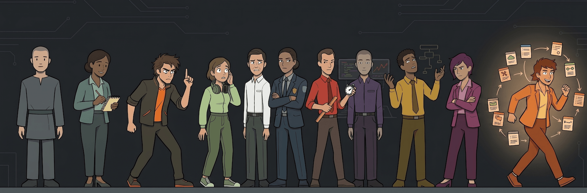

neurodiveragents
SOFTWARE AGENTS WITH NEURODIVERGENT COGNITIVE STYLES
Eleven specialist AI agents for Claude Code, OpenCode, Cursor, and GitHub Copilot — each grounded in a real cognitive style, not a list of rules.
npx neurodiveragents install
Meet the Agents
Click any agent to expand their profile.
Install
The installer will detect your AI coding assistants and configure the custom agent prompts automatically. No global state, pure local configuration.
Claude Code
npx neurodiveragents install --claude
Cursor
npx neurodiveragents install --cursor
OpenCode
npx neurodiveragents install --opencode
GitHub Copilot
npx neurodiveragents install --copilot